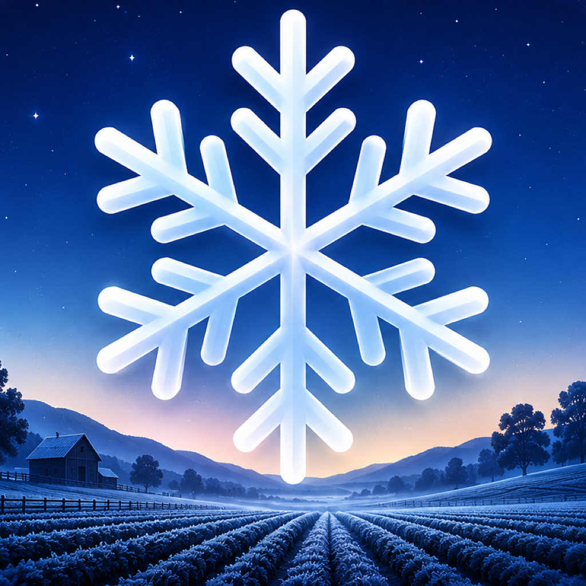

Clear Risk
Safe, Watch, Frost likely, or Severe frost risk for each growing location.

Frost Alert
See tonight's frost risk, the expected overnight low, a three-night outlook, and practical actions for frost-sensitive plants and crops.
Safe, Watch, Frost likely, or Severe frost risk for each growing location.
Plan frost protection before the coldest nights arrive.
Local evening and morning notifications are scheduled from the latest refreshed forecast.
Cover plants, move pots, check frost cloth, and protect seedlings before temperatures drop.
Forecasts are guidance only. For high-value crops, use local sensors and professional frost systems as needed.